This section is based on Atallah et al. [2]. The reader might
also want to consult [8,9,13,16].
The detection of the above-mentioned approximate repetitiveness is done by
approximate pattern matching, whence the name Pattern Matching Image
Compression (PMIC). The main idea behind it is a lossy extension of the
Lempel-Ziv data compression scheme in which one searches for the longest
prefix of an uncompressed file that approximately occurs in the
already processed file. The distance measure subtending the notion of
approximate occurrence can be the Hamming distance, or of the
square error distortion, or the string edit distance, or any of
the other distances considered in the distortion theory (cf.
[3]).
In short, let us consider a stationary and ergodic sequence
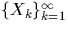
taking values in a finite alphabet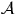
(think of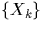
as an image scanned row by row). For image compression the alphabet has size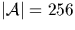
. We write Xmn to denote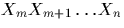
, and for simplicity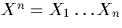
. The substring X1n will be called database sequence or training sequence. We encode X1n into a compression code Cn, and the decoder produces an estimate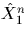
of X1n. As a fidelity measure, we consider any distortion function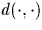
that is subadditive, and that is a single-letter fidelity measures, that is, such that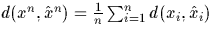
. Examples of fidelity measures satisfying the above conditions are: Hamming distance, and the square error distortion where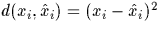
. As in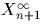
(i.e., uncompressed image) that approximately occurs in the database (i.e., already compressed image). More precisely, for a given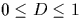
we define: Let Ln be the length k of the longest prefix of for which there exists i,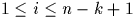
, such that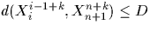
where D is the maximum distortion level.A variable-length compression code can be designed based on Ln. The code is a pair (pointer to a position i, length of Ln), if a sufficiently long Ln is found. Otherwise we leave the next Ln symbols uncompressed. We clearly need
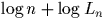
bits for the above code. The compression ratio r can be approximated by| 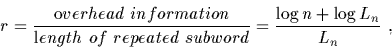 |
(1) |
and to estimate it one needs to find out probabilistic behavior of Ln. In [8,9] it is proved that
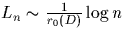
where r0(D) is the so called generalized Rényi entropy (which could be views as follows: the probability of a typical ball in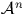
of radius D is approximately 2-n r0(D)). From (1) we conclude that the compression ratio r is asymptotically equal to r0(D).
The above main idea is enhanced by several observations that constitute
PMIC scheme. They are:
Additive Shift. It is reasonable to expect that in an image there are several substrings, say xm, ym, that differ only by almost constant pattern, that is, yi=xi +c for
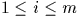
where c is not necessary a constant, but whose variation is rather small.In such a case we store the average difference c as well as a (pointer,length) pair, which enables us to recover yi from xi (instead of storing yi explicitly). In general, we determine the additive shift c by checking whether the following condition is fulfilled or not
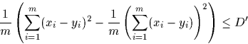
where D' is a constant. If the above holds, we compute the shift c as
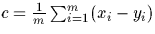
. It can be easily verified that for xi=yi+c, and c a constant, the above procedure returns c. In passing, we should observe that this enhancement improves even lossless (D=0) image compression based on the Lempel-Ziv scheme.Reverse Prefix. We check for similarities between a substring in the
uncompressed file and a reversed (i.e., read backward) substring in
the database.
Variable Maximum Distortion. It is well known that human vision can
easily distinguish an ``undesired'' pattern in a low frequency (constant)
background while the same pattern might be almost invisible to humans in
high frequency (quickly varying) background.
Therefore, we used a low value of maximum distortion, say D1, for slowly varying background, and a high value, say D2, for quickly varying background. We automatically recognize these two different situations by using the derivative
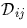
of the image that is defined as
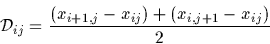
where xij is the value of (i,j) pixel. In our implementation, we used the lower value of D whenever
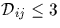
and the higher value of D otherwise.Max-Difference Constraint. Our code will also satisfy the additional constraint that
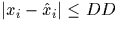
where DD is a suitably chosen value. This additional constraint, which we call max-difference constraint, ensures that visually noticeable ``spikes'' are not averaged out of existence by the smoothing effect of the square error distortion constraint. We incorporate this max-difference constraint in the function by adopting the convention that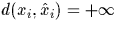
if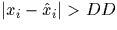
, otherwise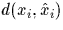
is the standard distortion as defined above (i.e., Hamming or square of difference).Small Prefix. It does not make too much sense to
store a (pointer,position) when the longest prefix is small.
In this case, we store the original pixels of the image.
Run-Length Coding. For those parts of the picture that do not vary at all, or vary little, we used run-length coding: if the next pixels vary little, we store a pixel value and the number of repetitions.

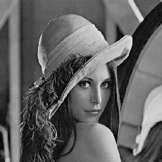
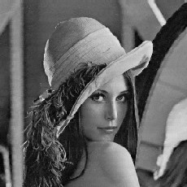
Prediction. A significant speed up in compression without major
deterioration in quality can be obtained by using prediction. It works as
follows: we compressed only every second row of an image, and when
decompressed we restore the missing row by using a prediction (cf.
[11], and next sections). For high quality image compression, one can
design a two-rounds approach where in the second round one sends the
missing rows. Figure 1 shows two versions of the
compressed Lena picture: one with PMIC, and the other with PMIC and
predictive ``reduction/expansion''.
Finally, we also explore in this paper one more feature, namely:
Column compression. PMIC is performed on rows.
In order to have it performed on columns,
one simple way to proceed is to ``transpose'' the original image before
compression. Indeed, the rows of the compressed ``transposed''
image are the columns of the original one. This algorithm has been
performed on several different images, and this feature can sometimes
increase either the compression ratio or the quality level, as shown in
Figure 1.
Let us discuss algorithmic challenges of PMIC. It boils down to
an efficient implementation of finding the longest prefix of length Ln
in yet uncompressed file.
We present below one possible implementation (for others the
reader is refereed to [2].
Let x1n denote the database, y1m=xn+1n+m denote the
yet uncompressed file.
As before, we write d(xi,yj) for a distortion measure between two
symbols, where is understood to incorporate
the max-difference criterion discussed earlier.
Algorithm PREFIX
Input: x1n and y1m
Output: Largest integer k such that, for some index t (
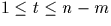
),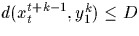
. The algorithm outputs both k and t.begin Initialize all Sij := 0. for i=1 to n-m do for j=1 to m do Compute Sij := Si,j-1 + d(xi+j-1, yj) doend doend Let k be the largest j such that, and let t be the corresponding i Output k and t end
The above can easily be modified to incorporate the enhancements
discussed above (additive shift, etc.) and to use O(1) variables
rather than the Sij array.
In order to compress an
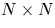
image we apply PREFIX several times to compress a row, which we call COMPRESS_ROW algorithm, and this is further use to compress a whole image in either COMPRESS_LONG_DATABASE (where the database sequence is of multiplicity of N, i.e., f N where f is a small integer) or COMPRESS_SHORT_DATABASE (where the database sequence is of length O(1) but located just above the ``point'' of compression). In the former case the algorithmic complexity of compression is O(N4) while in the latter case it is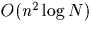
which is only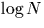
away from the optimal complexity O(N2). In this paper we only use COMPRESS_SHORT_DATABASE algorithm.